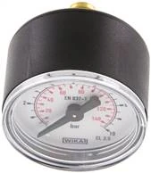

1 · Chọn dải đo
Nguyên tắc an toàn: áp làm việc thường nằm ở khoảng 1/2 đến 2/3 thang đo. Với áp làm việc ~0,6 bar thì MW 140 (0-1 bar) là phù hợp; nếu áp làm việc cao hơn, chọn mã dải đo lớn hơn cùng dòng (MW 440 = 0-4 bar, MW 1040 = 0-10 bar…).
Fast Group Engineering hỗ trợ báo giá ngay, kiểm tra thời gian cấp hàng và chuẩn bị chứng từ cho mã WIKA MW 140 theo nhu cầu mua hàng thực tế của nhà máy.



WIKA MW 140 là đồng hồ áp suất cơ lắp ngang thuộc nhóm Manometer waagerecht Ø 40, 50, 63 mm, cấp chính xác 2,5. Phiên bản này có đường kính mặt 40 mm, dải đo 0 - 1 bar và ren kết nối G 1/8", phù hợp các vị trí cần mặt đồng hồ nhỏ gọn, dễ đọc tại máy. Khi nhận RFQ, Fast Group đối chiếu lại part number, dải đo, kiểu ren và biến thể phù hợp trước khi báo giá; đồng thời hỗ trợ kiểm tra nguồn hàng và chuẩn bị hóa đơn, CO/CQ hoặc hồ sơ kỹ thuật theo yêu cầu.
Khách hàng nên đối chiếu các thông số dưới đây với thiết bị đang lắp hoặc bản vẽ kỹ thuật trước khi đặt hàng: dải đo, đường kính mặt, ren kết nối, kiểu lắp và chứng từ cần kèm theo.
WIKA MW 140 là đồng hồ áp suất cơ kiểu lắp ngang (mặt sau ra chân), đường kính mặt 40 mm — thuộc dòng đồng hồ nhỏ gọn thường dùng để quan sát áp suất trực tiếp tại máy, tại cụm van hoặc trên đường ống khí nén, nước. Cơ cấu đo dạng ống Bourdon bằng hợp kim đồng, vỏ và ren nối bằng đồng thau, phù hợp với các môi chất không ăn mòn đồng hợp kim như khí nén, khí trơ, nước và dầu thủy lực nhẹ.
Ở phiên bản MW 140, dải đo là 0 - 1 bar với vạch chia 0,05 bar, ren kết nối G 1/8" và cấp chính xác Class 2,5 theo thông lệ của dòng đồng hồ đường kính nhỏ. Đây là dải đo thấp, nên khi lắp cần tránh môi chất có xung áp mạnh hoặc nhiệt độ cao đi trực tiếp vào đồng hồ — nếu có, nên dùng thêm bộ giảm xung hoặc ống siphon để bảo vệ cơ cấu đo và giữ độ chính xác lâu dài.
MW 140 nằm trong một họ sản phẩm rộng gồm 99 biến thể cùng kiểu lắp ngang, khác nhau ở đường kính mặt (40 / 50 / 63 mm), dải đo (từ chân không -1…0 bar đến 0-100 bar) và ren nối (G 1/8" hoặc G 1/4"). Nhờ vậy, nếu MW 140 chưa đúng nhu cầu, bạn gần như luôn tìm được một mã cùng dòng phù hợp hơn về dải đo hoặc kích thước — Fast Group hỗ trợ đối chiếu và đề xuất mã đúng.
Bốn thông số quyết định việc chọn đúng mã. Đối chiếu nhanh trước khi gửi RFQ để tránh mua sai dải đo hoặc sai ren.
Nguyên tắc an toàn: áp làm việc thường nằm ở khoảng 1/2 đến 2/3 thang đo. Với áp làm việc ~0,6 bar thì MW 140 (0-1 bar) là phù hợp; nếu áp làm việc cao hơn, chọn mã dải đo lớn hơn cùng dòng (MW 440 = 0-4 bar, MW 1040 = 0-10 bar…).
Ø40 mm cho vị trí chật, quan sát gần; Ø50 hoặc Ø63 mm khi cần đọc từ xa hoặc gắn tủ. Cùng dải đo 0-1 bar, bạn có thể chọn MW 140 (Ø40), MW 150 (Ø50) hoặc MW 163 (Ø63).
Dòng Ø40 thường ren G 1/8"; dòng Ø50 / Ø63 thường ren G 1/4". Cần đối chiếu ren của cổng lắp hiện có; nếu lệch, dùng đầu nối chuyển ren thay vì đổi đồng hồ.
MW 140 (đồng hợp kim) hợp với khí nén, khí trơ, nước, dầu nhẹ. Môi chất ăn mòn, hơi nóng hoặc rung mạnh nên chuyển sang đồng hồ dầu (glycerin) hoặc bổ sung phụ kiện bảo vệ.
Cùng kiểu lắp ngang, dòng MW chia theo đường kính mặt và ren kết nối như sau:
Quan sát áp suất tại chỗ trên đường ống, cụm máy, bồn chứa; ưu tiên mặt dễ đọc, ren tiêu chuẩn G 1/8".
Giám sát áp nước, bơm, hệ lạnh; chọn dải đo có dư tải để bảo vệ cơ cấu đo khỏi xung áp.
Thay đồng hồ hỏng theo đúng dải đo, ren và đường kính; Fast Group hỗ trợ đối chiếu mã cũ.
Các phụ kiện bảo vệ (van chặn, ống siphon, bộ giảm xung, đầu nối chuyển ren, gioăng) đều có sẵn — xem Phụ kiện đồng hồ áp suất WIKA hoặc gửi kèm yêu cầu trong RFQ.
Dòng đồng hồ áp suất cơ WIKA tham chiếu tiêu chuẩn EN 837-1. Fast Group cung cấp chứng từ theo yêu cầu QA/QC của đơn hàng.
Gửi part number, số lượng và thời gian cần hàng; Fast Group kiểm tra nguồn hàng và phản hồi báo giá nhanh, kèm phương án mã thay thế nếu cần.
Đây là đồng hồ áp suất cơ lắp ngang, đường kính mặt 40mm, dải đo 0 - 1 bar, ren kết nối G 1/8", cấp chính xác 2,5. Fast Group xác nhận lại theo mã đầy đủ trước khi báo giá.
Có. Gửi mã cũ hoặc ảnh nameplate, Fast Group đối chiếu và đề xuất biến thể WIKA tương đương gần nhất theo dải đo, ren và vật liệu.
Hỗ trợ hóa đơn, CO/CQ, datasheet và hồ sơ kỹ thuật theo yêu cầu QA/QC của từng đơn hàng và dự án.
MW 140 là kiểu lắp ngang — chân ren nằm phía sau, mặt đồng hồ hướng thẳng người đọc, hợp với tủ điều khiển và panel. Loại lắp đứng có chân ren ở đáy, hợp khi đồng hồ gắn trực tiếp trên đường ống. Nếu chưa chắc kiểu lắp, gửi ảnh vị trí để Fast Group tư vấn.
Tùy điều kiện lắp: môi chất nóng cần ống siphon, áp xung mạnh cần bộ giảm xung, cần cô lập khi kiểm định thì thêm van chặn. Fast Group có thể chào trọn bộ đồng hồ + phụ kiện trong cùng một RFQ.
Cần dải đo hoặc kích thước mặt khác? Xem nhanh các biến thể cùng dòng và gửi RFQ theo mã phù hợp.
Cấu tạo ống Bourdon, nguyên lý đo và các dòng đồng hồ áp suất cơ WIKA phổ biến.
Hướng dẫn chọn Ø40/50/63 mm và ren G 1/8" / G 1/4" cho đúng vị trí lắp.
Ý nghĩa Class 2,5 / 1,6 / 1,0 và cách chọn cấp chính xác phù hợp nhu cầu.